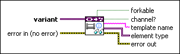

Get Channel Information VI
Owning Palette: Data Type Parsing VIs
Requires: Base Development System
Retrieves channel information from the data type stored in variant. This VI returns an error if variant does not contain a channel.
 Add to the block diagram Add to the block diagram |
 Find on the palette Find on the palette |